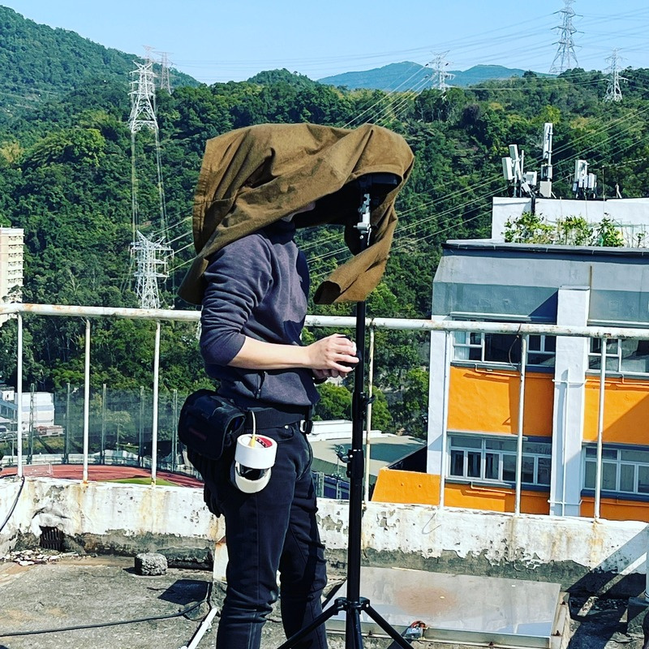
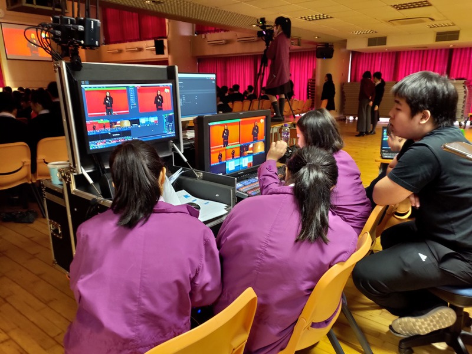
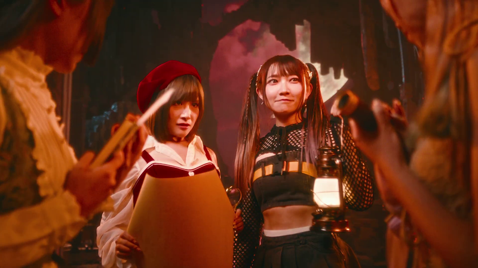
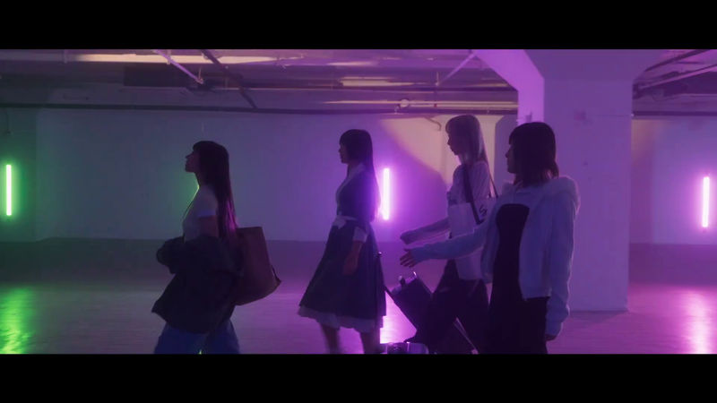
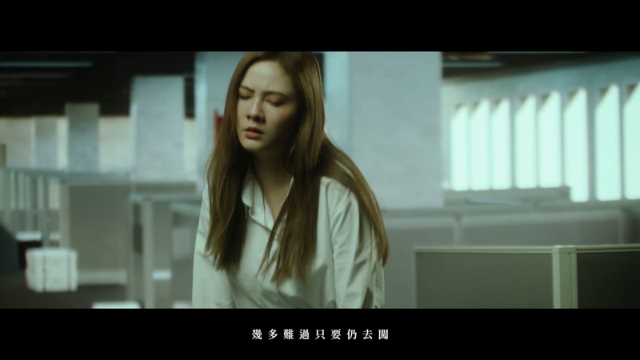

虛擬製作與 ICVFX
LED Volume、Unreal Engine、nDisplay、攝影機追蹤、鏡頭校正、OCIO、同步鎖相、時碼及現場操作流程。
作品集
2025 portfolio 涵蓋虛擬製作、動作捕捉、影像製作、活動製作、教學、具名 MV highlights，以及可直接展開合作的製作系統。
根據 extracted PDF sections 整理：影像創作、即時系統、現場製作、教學及具名 project highlights。
LED Volume、Unreal Engine、nDisplay、攝影機追蹤、鏡頭校正、OCIO、同步鎖相、時碼及現場操作流程。
Unreal Engine、Blackmagic Ultimatte、DeckLink、LiveLink、NDI、Spout、去背攝影機訊號及色彩顯示流程。
Rokoko、CHINGMU、AI 視覺動作捕捉、虛擬攝影機、LiveLink Face、MetaHuman 流程及多操作員演出控制。
電影攝影、攝影組、燈光、剪接、視覺特效、動態圖像、3D 動畫及最終畫面輸出。
投影映射、LED 播放、vMix、Resolume、HiRender、NDI 串流、Dante 音頻、燈光控制及 TouchDesigner/Unity 互動製作。
Go、C++、JavaScript、Python、C#、Linux、Docker、Proxmox、TrueNAS、自訂工具、AI 輔助流程及製作網絡。
虛擬製作
我 hands-on 建立香港早期 LED ICVFX 製作棚之一：由 scouting 高解像 LED panels、檢查 refresh 行為，到實體吊掛和讓攝影機可以真正使用這個場景。
基建範圍包括渲染節點、Genlock、製作網絡、Unreal Engine with nDisplay、硬件攝影機追蹤、鏡頭校正，以及自訂 mobile app 控制 virtual camera。
動作捕捉與虛擬藝人
為虛擬藝人及 VTuber 製作時，我把 mocap data 與 Unreal Engine real-time rendering 同步，讓 on-location performance 變成可直播的角色演出。
活動技術經驗會直接進入 pipeline：media server、NDI streams、low-latency routing、virtual camera 及多操作員控制室規劃。

商業項目和 MV 讓我參與多種角色：攝影指導（Director of Photography）、assistant camera、gaffer、剪接、VFX artist、motion graphics artist 及 3D animator。
為 MV 及商業製作處理現場畫面、燈光判斷和攝影機操作。

以 DaVinci Resolve、Adobe After Effects、Blackmagic Fusion、Blender 及 Unreal Engine rendering 完成後期工作。

在劇組崗位、燈光 logistics、現場製作和技術排障之間靈活支援影像項目。
現場活動與互動系統
活動製作經驗由 corporate gala 到 high-energy music festival，包含 visual engineer、audio engineer 及 stagehand 的現場工作。
範圍包括 Resolume Arena for LED displays、projection mapping、lighting consoles、NDI streaming setups、Dante audio，以及讓 live systems 持續順暢運作的現場紀律。

教學與學習
我為 NGO 和學校教授 media production courses，和由 curious kids 到 high-school crews 的學生一起處理剪接、DaVinci Resolve、多機廣播和 filmmaking techniques。
在香港城市大學，我亦曾為化學教學開發 AR/MR 工具並支援學生項目。教學會迫使 workflow 變得清楚：它必須可以解釋、可以重複，而且真正有用。

Extracted PDF 內有四個具名 MV highlights。以下每張卡都使用對應 extracted project folder 的圖片。

【平行幻想 PARALLEL PHANTASIA】 Official Music Video，使用 matching extracted project stills 呈現。

【戀愛禁止 DOPAMINE】 Official Music Video，使用對應 Dopamine image group 的來源圖。
Portfolio 內的 fanmade MV highlight，以對應的 blue-stage extracted still 呈現。

是不是這樣的痛過人才算真正的成長過，使用對應 extracted project image。
Cover、About Me 和 Contact 已分別在主頁、關於及聯絡頁代表；practice sections 與具名 project sections 則在本頁使用 matching extracted images 呈現。
Imagine Division、innoneer.TV、HealthMutual Group、香港城市大學、香港電競音樂節、TVB 及 venue / event roles 補充 extracted portfolio pages 以外的 employment 和 credit context。